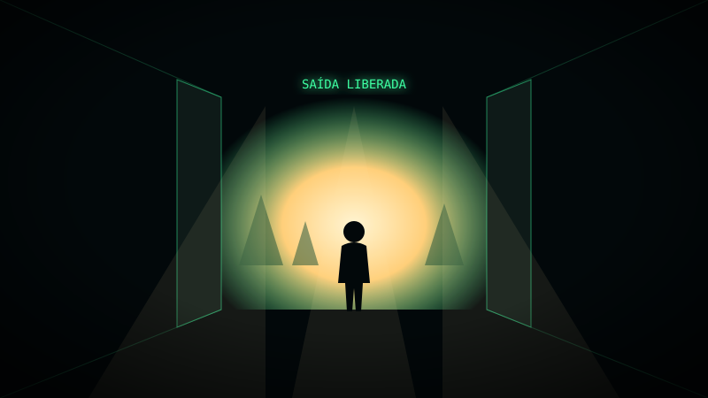

Final 01 // Missão concluída
Você escapou!

O teclado apita, a trava se solta e a porta de aço se abre devagar. O ar frio da manhã bate no seu rosto. É a primeira coisa real que você sente em horas.
📊 Relatório da missão
| Sala | Item | Status |
|---|---|---|
| Sala de Controle |  Cartão Cartão | |
| Laboratório |  Senha 740 Senha 740 | |
| Sala de Energia |  Bateria Bateria |
📁 Tem uma última pasta no seu bolso... abrir?
Você não lembra de ter pegado essa pasta. Dentro, uma ficha de voluntário com a sua foto e uma assinatura que é, sem dúvida, a sua letra:
"Se você está lendo isso, o apagamento falhou. Ótimo. Não confie no Dr. que assinou o protocolo. — Você, antes de esquecer."
Continua...? 👀